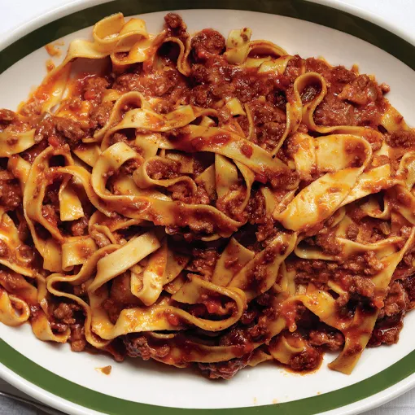

Return to Homepage

Don't touch-a my Spaghet
This italian classic should be a staple for any home cook. Ragu bolognese is a meat sauce that is traditionally served with a thicker ribbon-type pasta such as tagliatelle. This sauce is rich and flavorful and will be sure to delight your taste buds!
Ingredients
- 1 lb. Italian sausage
- 1 large carrot, chopped
- 1 yellow onion, chopped
- 2 stalks celery, chopped
- 1 cup red wine
- 1 cup whole milk
- 1 can (15.5 oz) crushed tomatoes
- 2 tbsp. olive oil
Steps
- Add oil to pan, heat on medium until shimmering. Add meat and break apart with wooden spoon. Cook until meat is brown and thereis no pink left.
- Add carrots, celery, and onion to the pan and cook until softened
- Add wine and reduce by half
- Add milk and tomatoes, bring to a boil and then lower to simmer. Let simmer until thickens and most of the liquid has evaporated, about 1 hour.